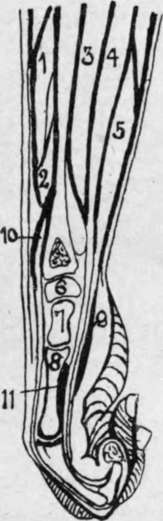

The Forearm. Surface Anatomy
Description
This section is from the book "Surgical Anatomy", by John A. C. MacEwen. Also available from Amazon: Surgical Anatomy.
The Forearm. Surface Anatomy
The forearm, when well developed, is oval in section in the upper third, but slightly flattened anteriorly, and more convex posteriorly. In the middle third it is more nearly circular, while near the wrist it becomes flattened antero-posteriorly. In women and children, however, the limb is rounded. The course of the radial artery is represented by a line from the middle of the bend of the elbow to the stvloid process of the radius. Where the limb is well developed, a shallow sulcus follows this course, which indicates the separation between the radial extensors and supinator longus on the outer side, and the flexors and pronator radii teres on the inner. The radial pulse is easily felt at the lower part of this sulcus, the vessel lying on the radius between the styloid process and the tendon of the flexor carpi radialis. The course of the ulnar artery in its lower third is represented by a line from the internal condyle to the radial side of the pisiform. The upper third curves up and outwards to meet the radial at the middle of the bend of the elbow.
The posterior surface is narrower than the anterior, and is limited internally by the ridge of the ulna, which is subcutaneous from the olecranon to the styloid, and externally by the radius, which is superficial in its lower half, but is obscured by muscles in the upper half. A sulcus, however, frequently exists, which indicates the position of the radius, and separates the supinator longus and radial extensors from the extensor communis digitorum. The extensor muscles of the thumb form a slight projection as they cross the lower end of the radius.
The skin on the front of the forearm is thin, delicate, and sufficiently transparent to exhibit the underlying veins, while on the posterior aspect it is thicker and covered with short hairs. The subcutaneous tissue is continuous with that of the arm, contains a varying amount of fat, and is traversed by the superficial veins, lymphatics, and sensory nerves. The chief veins are the radial, median, and anterior and posterior ulnar, and the lymphatic vessels accompany them. The internal cutaneous nerve supplies the ulnar border both in front and behind ; the musculo-cutaneous supplies the radial border both anteriorly and posteriorly, but is assisted posteriorly by a branch of the musculo-spiral. The deep fascia is directly continuous with that of the arm and hand, and forms a complete investment for the limb. In front it receives the bicipital fascia, and behind is reinforced by the triceps aponeurosis. It is attached above to the olecranon process and condyles of the humerus ; at the wrist it is continuous with the anterior and posterior annular ligaments ; and by its deep surface it gives attachment to several muscles, and sends in intermuscular septa, which are attached to the bones.
The muscles consist of anterior, antero-external, and posterior groups. The anterior group arises from the internal condyle, and consists of a superficial and a deep set. The superficial muscles, from without inwards, are the pronator radii teres, flexor carpi radialis, palmaris longus, flexor sublimis digitorum, and flexor carpi ulnaris. The deep set consists of the flexor profundus digitorum, flexor longus pollicis, and pronator quadratus (which rises from the lower quarter of the anterior surface of the ulna). These muscles are supplied by the median and its anterior interosseous branch, except the flexor carpi ulnaris and inner half of the flexor profundus digitorum. The antero-external set arise from the external condyle and supracondylar ridge, and include the supinator longus, the long and short radial extensors of the carpus, and supinator brevis. The two former are supplied by the musculo-spiral, and the two latter by its posterior interosseous branch. The posterior muscles consist of superficial and deep sets. The former comprise the extensor communis digitorum, extensor minimi digiti, extensor carpi ulnaris, and anconeus ; the latter the extensor ossis metacarpi pollicis, extensores brevis and longus pollicis, and extensor indicis. All these muscles are supplied by the posterior interosseous branch of the musculo - spiral, except the anconeus, which is supplied by a special branch of the musculo-spiral.
The median nerve passes between the two heads of the pronator teres, and compression between these may explain occasional cramp of the flexor muscles after violent exercise. It then runs down the centre of the limb between the superficial and deep muscles. The ulnar nerve enters the limb between the two heads of the flexor carpi ulnaris, and runs directly from the internal condyle of the humerus to the radial side of the pisiform bone.
The ulnar artery is the larger of the brachial terminal branches. Its line has already been given. It lies at first deeply under the superficial muscles on the flexor profundus, and is crossed by the median nerve, the deep head of the pronator teres intervening. It is accompanied by venae comités, and continues to lie on the flexor profundus, but becomes more superficial, the flexor sublimis lying to its outer, and the flexor carpi ulnaris and ulnar nerve to its inner side. It gives off anterior and posterior ulnar recurrents to the anastomosis at the elbow; the common interosseous, and the anterior and posterior ulnar carpáis.
The common interosseous arises close to the origin of the ulnar, and divides into anterior and posterior interosseous arteries, the former, accompanied by venas comités and the anterior interosseous nerve (median), lying in front of the interosseous membrane, between the flexor profundus and flexor longus pollicis, and supplying the nutrient vessels to ulna and radius. At the upper border of the pronator quadratus it passes to the posterior surface, and joins the anastomosis at the wrist. The posterior interosseous passes to the posterior surface, between the upper border of the interosseous membrane and the oblique ligament, and soon runs between the superficial and deep muscles, to finally anastomose with the anterior interosseous. It gives off the interosseous recurrent to the elbow anastomosis.
The course of the radial artery has also been given. The supinator longus lies to its outer side, and at first overlaps it ; the pronator teres above and the flexor carpi radialis below lie to its inner side. It is accompanied by venas comités, and the radial nerve lies to its outer side in the middle of the forearm. It gives off the radial recurrent, anterior radial carpal, and superficial volar. The anastomosis between the vessels in the forearm is very free, necessitating ligature of both ends of a divided vessel.
The ulnar may be ligatured by a 2-inch incision in line of the artery at the junction of the upper and middle third of the forearm, the interval between the flexor carpi ulnaris and flexor sublimis sought, and the vessel exposed. At the wrist a small vertical incision in the line of the artery, commencing 1 inch above the wrist, is made through superficial tissues, the interval between flexor carpi ulnaris and flexor sublimi? sought, and the vessel ligatured. The radial is more easily ligatured at any part of its course, owing to its more superficial position. An incision is made in the line of the artery, the supinator longus separated from the pronator radii teres above, or the flexor carpi radialis below, and the vessel exposed and ligatured. Both radial and ulnar arteries occasionally lie immediately beneath the skin.
The radius and ulna lie nearer the posterior than anterior surface of the forearm, particularly in the upper third. Here, also, the muscles lie chiefly in front and on either side, whereas lower down the muscles lie chiefly in front and behind.
In compound fractures, therefore, the tendency is for the fragments to project on the posterior surface. While the ulna is* wide above, and forms the chief constituent of the elbow-joint, the radius is wide below, and has a similar relation to the wrist. In the centre of the arm they are of about equal size. The interosseous membrane extends from 1 inch below the tuberosity of the radius to the inferior radio-ulnar articulation. Its fibres run generally down and inwards, and it is thicker below than above. It helps to communicate shocks received by the hand to the ulna, and thus prevent upward displacement of the radius. The oblique ligament connects the bones above the interosseous membrane, running from the outer border of the coronoid of the ulna down and out to the lower part of the bicipital tuberosity of the radius. It prevents the radius being driven away from the humerus. The posterior interosseous artery passes between the oblique ligament and the interosseous membrane. The bones lie parallel to one another when the limb is midway between pronation and supination, and the entire interosseous membrane is then slack. In full pronation the interosseous space is narrowest, and it is widest in full supination, when it forms an irregular ellipse.
Fig. 54.-Longitudinal Section of Forearm and Hand. (After Braune.)
1. | Ext. oss. metacarp. polì. | 5. Flex, sublim. dig. | 9. Ant. annular ligt. |
2. | Ext. prim, internal polU | 6. Semilunar. | 10. Ext. comm. dig. |
3. | Flex. long. poll. | 7. Os. magnum. | 11. Adduct. poll. |
4. | Flex, profund. dig. | 8. Third metacarp. |
Continue to: